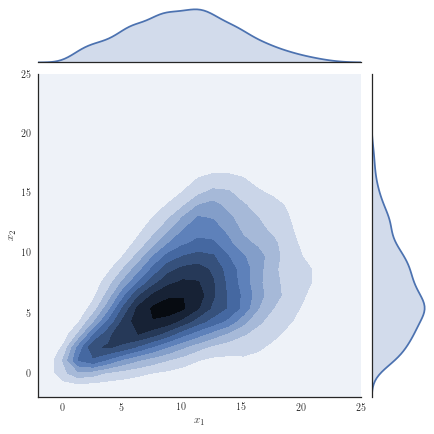

PhD Research
Issue 1
Projects currently being undertaken by the department’s PhD students…
Wenyu Wang
The multi-state model describes a process where individuals move among a series of states over time. It is increasingly popular in a wide range of applications in biostatistics.
Generally, if death is one state, the multi-state model can be seen as an extension of survival analysis. In most studies, covariate effects are fixed effects. These effects do not take into account unobserved heterogeneity with respect to individual or group level effects. In multi-state models, unobserved heterogeneity in rates of moving from one state to another is often present. In survival analysis, such an effect is called a frailty.
My PhD research is focusing on frailty models. For instance, exploring different distribution of frailties, defining frailties in different transitions, and multivariate frailty models. Including frailty effects helps to improve model performance under the Markov assumption. In multi-state models, we assume that the continuous-time multi-state model is a Markov process, which implies that future states are only determined by the current states. It is known that in reality the transition hazard may be affected by the time spent in previous states, implying that the future not only depends on current states but also the past, breaking the Markov assumption. For example, individuals who have spent more time in a diseased state are more likely to move towards death. This can be addressed using a frailty model.
Asma Saleh
I consider Tobit models, which refer to censored or truncated regression models in which the range of the dependent variable is constrained in some way.
For example, a leading model used to deal with censored data is the Tobit 1 model, which is used to analyse household expenditure on durable goods against income where the expenditure cannot be negative. The main challenge with such models is that ignoring censoring will generally lead to inconsistent and biased estimators. In the example above, because the expenditure is observed only when it is positive, conventional regression methods like ordinary least squares estimators for the relationship between household expenditure and income are downwardly biased. In my PhD I consider variations of the Tobit 1 model for the general problem known as sample selection.
This means that observational studies are rarely based on pure random samples. Instead, a sample is based in part on values taken by a dependent variable which gives rise to sample selection bias. The most popular solution is a two-stage procedure proposed by Heckman, called the Heckit estimator, combining a probit maximum likelihood procedure and simple linear regression.
I am investigating the performance of implicit bias reduction techniques such as the modified score equations method of Firth (1993) and the indirect inference method of Kuk (1995), through simulation and contrasting them with the standard maximum likelihood estimation and the Heckman two-step estimation procedure.
Marta Campi
My research focuses on non-stationary basis decomposition methods in time-frequency analysis.
Classical methodologies in the field of time-frequency analysis rely on strong statistical assumptions that may not be valid in real data scenarios and modern applications. This work is based on a class of methods known as the Empirical Mode Decomposition (EMD). The EMD is a non-parametric time-series decomposition technique, in which a time-series basis called the Intrinsic Mode Functions (IMFs) is extracted, which has specific statistical properties.
The main focus is offering a very general applicable family of basis extraction methods with relatively few requirements. This is highly important for two main reasons: firstly, more universal applications can be taken into account; secondly, the EMD has very little a priori knowledge of the process required in order to apply it.
The application taken into account here is related to Automatic Speaker Verification (ASV) technologies. As with any biometric system, ASV is subject to spoofing attacks which mimic a target speaker’s voice in person or remotely via artificial tools. The EMD is employed to extract features of speech signals to assess their discrimination power for the classification of real and synthetic voices.
Mai Ngoc Bui
Our main interest is covariance matrices, which appear in many contexts, such as in diffusion tensor imaging and volatilities for multiple financial assets.
The space of symmetric positive definite matrices is not only a convex cone, but also a smooth manifold. By endowing it with different Riemannian metrics, one can get different Riemannian structures of the manifold. There are two commonly used Riemannian metrics, namely the Log-Euclidean (LE) and Affine-Invariant (AI) metrics. Although much progress has been made towards reducing the computational cost of working with these, there are still many challenges if the goal is to employ a sampling algorithm on such a space.
Our interest lies in constructing an Ornstein-Uhlenbeck (OU) process on the space of covariance matrices, and fitting this model to data. For high-frequency data, the likelihood can be approximated using the Euler-Maruyama method in terms of the exponential map, making inference feasible. In the low-frequency setting, however, this is no longer possible.
In Euclidean space, the common approach is to use a data-augmentation algorithm, i.e. imputing latent data points between each adjacent pair of observations to allow the Euler-Maruyama method to give a better approximation to the likelihood. To do the same on a manifold requires a bridge sampler method on manifold. We have developed such a bridge sampler method, meaning that inference for low-frequency data can be performed.
Marcel Hirt
I am interested in Bayesian inference, particularly when the computation of the posterior distribution is challenging.
Approximation methods such as Markov Chain Monte Carlo (MCMC) can be unsatisfactory because they scale poorly to large datasets. I have therefore been working on variational inference methods that instead of sampling from the posterior distribution, try to solve an optimization problem: find a distribution within some variational family that is close to the posterior distribution. However, if the variational family is not very flexible, one can end up with a bias, in contrast to MCMC methods that have some asymptotic guarantees.
Constructing good approximation families has been an ongoing challenge, because such families should be both flexible but also computationally efficient at the same time. A classic approach is to assume a so called mean-field variational family, where all components are independent. While computationally efficient, this can be a poor approximation. I have developed a new approximating family motivated by copulas. The basic idea to sample from this new distribution is to first sample from a distribution on the hypercube and then apply Gaussian quantile functions and a rotation. The resulting distribution can be more flexible than a Gaussian approximation.

Stay on top of the latest news and research coming from the Department of Statistical Science by visiting: www.ucl.ac.uk/statistics.